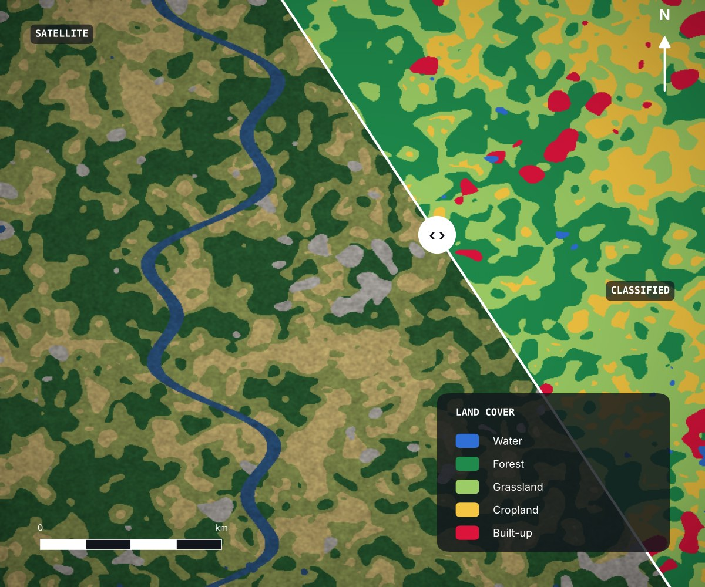
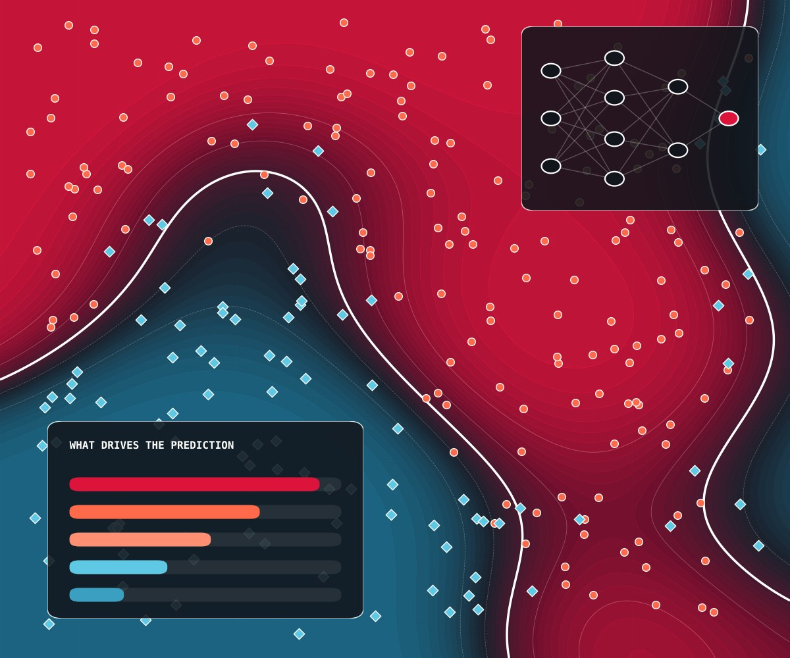
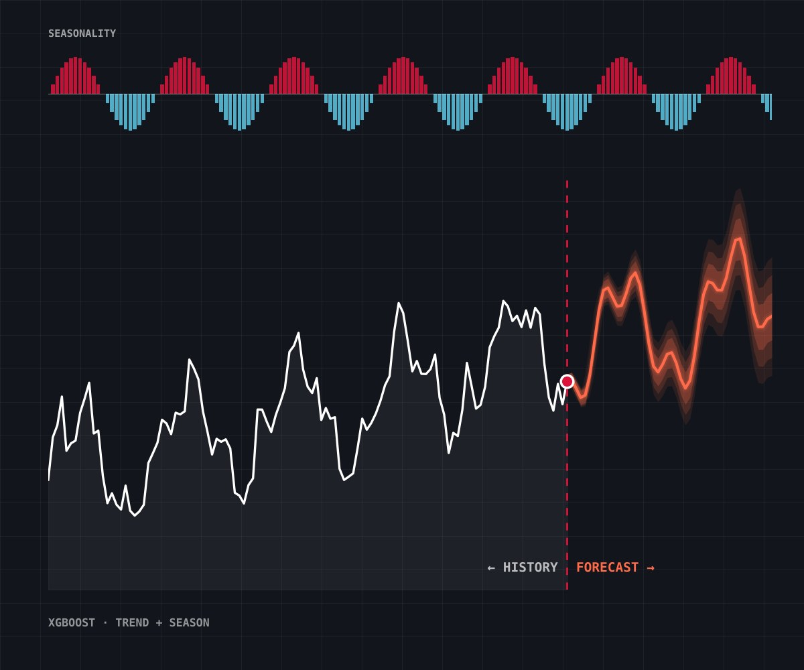
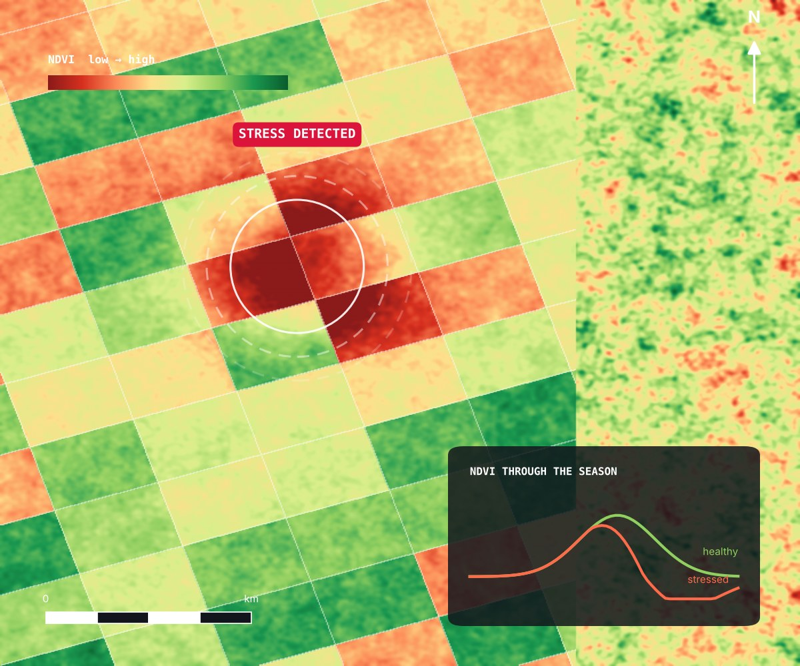
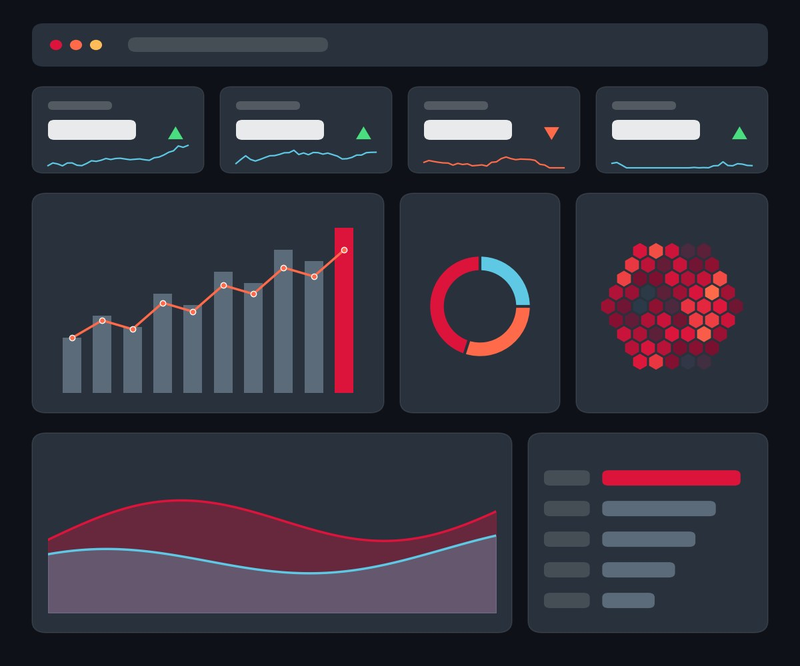

GIS & Spatial Analysis
Suitability, proximity, accessibility and multi-criteria analysis, clean spatial databases, and publication-ready maps in ArcGIS and QGIS.
GIS · Remote Sensing · GeoAI · Data Science
I turn satellite imagery, spatial data and business data into maps, dashboards and machine-learning tools that help organisations see what's happening, why it's changing, and what to do next.
What I do
From a single map to a full AI-enabled system, every engagement is built around the decision you need to make, the data you already have, and outputs your team can actually use.
Suitability, proximity, accessibility and multi-criteria analysis, clean spatial databases, and publication-ready maps in ArcGIS and QGIS.
Satellite image processing, land-cover classification, vegetation and water indices, and change detection over time with Google Earth Engine.
Temperature and rainfall trends, hazard and exposure mapping, climate-risk assessment and environmental impact assessment support.
Data cleaning, statistics, KPI design and interactive dashboards in Power BI, ArcGIS Dashboards and Streamlit.
Predictive and classification models, spatial feature engineering, forecasting, and explainable results you can defend.
Document-grounded chatbots like the one on this site, workflow automation, prompt engineering, and modern websites that connect it all.
Practical courses and workshops in QGIS, ArcGIS, Earth Engine, Python, R, dashboards, GeoAI and responsible AI.
Describe your challenge to my AI assistant and it will point you to the right service, with sources.
Case studies
Each project solves a real decision problem. Here's the challenge, what I built, and what it can do for you.

01Remote sensing · Machine learning · Google Earth Engine
Know exactly what's on the ground, without months of field surveys.

02Predictive analytics · Python · R
Stop guessing. Decide with forecasts grounded in your own data.

03Time-series forecasting · XGBoost
See demand, sales or climate trends coming before they arrive.

04Vegetation monitoring · NDVI / EVI · GEE & QGIS
Spot crop stress and land degradation before they show on the ground.

05Data visualisation · Dashboards · Storytelling
Turn overwhelming spreadsheets into a one-screen story your leaders act on.
Try them yourself
Where London overheats and how that is changing, to guide cooling, greening and resilience planning.
Open live dashboard ↗ Spatial crime intelligence
Spatial crime intelligenceMSOA-level GIS and spatial statistics exposing where deprivation and crime risk overlap.
Open live dashboard ↗ Earth Engine app
Earth Engine appNDVI, NDMI and NBR time series that track forest health, stress and disturbance as early warning signals.
Open live app ↗ Predictive agriculture
Predictive agricultureMachine-learning yield estimates that support more data-driven planting and planning decisions.
Open live app ↗ Customer retention
Customer retentionFlags customers at risk of leaving, explains why with SHAP, and ranks retention actions by return on investment.
Open live dashboard ↗ Explainable health AI
Explainable health AIXGBoost with threshold tuning and SHAP explanations for transparent early-risk screening from health indicators.
Open live app ↗How we'll work
Clarify the decision, users, data, constraints and what success looks like.
Review data quality, formats, access, privacy and existing tools.
Agree methods, platforms, milestones and validation steps.
Develop the maps, models, dashboards, automations or training.
Check accuracy, reproducibility, usability and limitations.
Deliver with documentation, training and recommended next steps.
About me
I work where environmental science, geospatial analysis and data science meet. My job is to take complex information, such as satellite imagery, climate records, field data and business data, and turn it into clear evidence and practical tools that people can use.
I'm a Chevening Alumnus, and I studied GIS and Climate Change at Swansea University in 2025/26. My background is in forestry and environmental management, and I keep building my skills in machine learning, AI agents and prompt engineering through continuing professional development.
Where do cities get hottest in summer, who lives in those hotspots, and which environmental factors are driving the heat? This study compared two of England's largest urban regions, neighbourhood by neighbourhood, across five summers.
From the thesis
Each city is measured against its own hottest 10% of neighbourhoods (the P90 threshold), so the red areas show each city's local extreme-heat hotspots, based on mean summer land surface temperature (LST).
Hotspots cluster in north-east and east London, with smaller pockets in the south and west.
Hotspots concentrate in central Birmingham, the north-west of the conurbation and around Coventry in the east.
Need neighbourhood-level heat-risk evidence for your city, council or organisation?
Discuss a projectLet's talk
Tell me about your project. Fees and timelines are agreed after a short scoping conversation about your goals and data.
3765, Nketa 7, Bulawayo, Zimbabwe